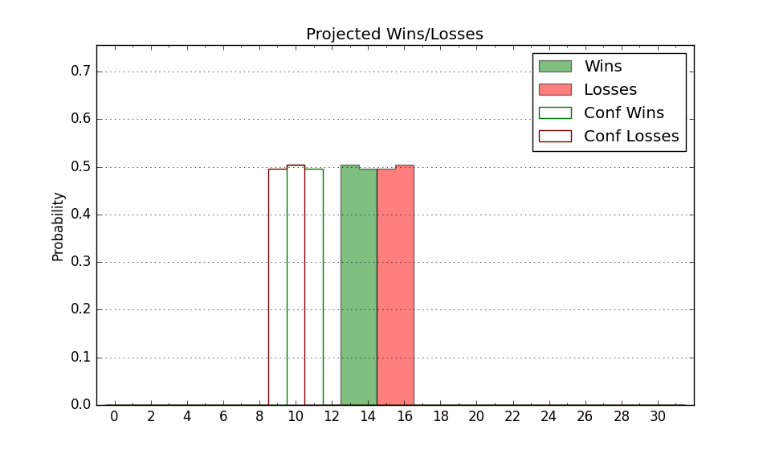

| Home | Game Probabilities | Conferences | Preseason Predictions | Odds Charts | NCAA Tournament |
| City: | Orem, Utah | |
| Conference: | Western (5th)
| |
| Record: | 10-9 (Conf) 13-15 (Overall) | |
| Ratings: | Comp.: 0.7 (158th) Net: 0.7 (158th) Off: 99.1 (283rd) Def: 98.4 (53rd) SoR: 0.0 (136th) |
| Remaining | ||||||
|---|---|---|---|---|---|---|
| Date | Opponent | Win Prob | Pred. | |||
| 3/9 | @ Abilene Christian (227) | 49.4% | L 67-68 | |||
| Previous | Game Score | |||||
| Date | Opponent | Win Prob | Result | Off | Def | Net |
| 11/9 | @Sam Houston St. (165) | 36.9% | W 79-73 | 2.7 | 9.8 | 12.5 |
| 11/15 | @Charlotte (114) | 24.4% | L 45-62 | -22.0 | 12.0 | -10.0 |
| 11/19 | (N) Southern Miss (263) | 69.6% | W 67-65 | -4.1 | 0.5 | -3.6 |
| 11/20 | (N) Cornell (103) | 34.3% | L 61-74 | -12.2 | 2.8 | -9.5 |
| 11/29 | Seattle (129) | 55.6% | W 78-72 | 24.0 | -11.0 | 12.9 |
| 12/2 | @Dixie St. (276) | 60.2% | L 53-65 | -21.7 | -1.1 | -22.8 |
| 12/5 | Weber St. (151) | 62.6% | W 70-54 | 5.3 | 19.7 | 24.9 |
| 12/9 | @Oregon St. (143) | 31.3% | L 71-74 | 12.9 | -12.4 | 0.5 |
| 12/16 | @Utah (48) | 10.6% | L 62-76 | -0.3 | 3.7 | 3.5 |
| 12/20 | Liberty (134) | 59.1% | L 63-79 | -7.4 | -22.1 | -29.5 |
| 12/29 | @Boise St. (30) | 7.9% | L 63-85 | 3.5 | -9.5 | -6.0 |
| 1/4 | California Baptist (186) | 71.3% | W 65-58 | 3.2 | 2.9 | 6.1 |
| 1/6 | Southern Utah (264) | 81.1% | W 80-62 | 6.1 | 4.4 | 10.5 |
| 1/11 | @UT Arlington (140) | 30.9% | L 69-83 | -3.0 | -9.3 | -12.3 |
| 1/13 | @UT Rio Grande Valley (321) | 73.3% | L 68-76 | -7.5 | -14.4 | -21.9 |
| 1/18 | @Grand Canyon (61) | 12.4% | L 65-78 | -5.3 | 7.2 | 1.9 |
| 1/20 | Dixie St. (276) | 83.7% | W 84-71 | 7.4 | -6.1 | 1.3 |
| 1/26 | @Seattle (129) | 26.8% | L 61-62 | 2.3 | 10.4 | 12.7 |
| 2/1 | @Stephen F. Austin (167) | 37.1% | L 72-77 | 11.4 | -16.1 | -4.7 |
| 2/3 | Grand Canyon (61) | 32.6% | L 67-86 | -5.6 | -12.0 | -17.6 |
| 2/8 | Tarleton St. (138) | 60.2% | L 61-72 | -15.8 | -2.0 | -17.8 |
| 2/10 | Abilene Christian (227) | 76.9% | W 74-45 | 6.7 | 26.1 | 32.7 |
| 2/15 | @California Baptist (186) | 42.1% | W 69-46 | 12.0 | 27.1 | 39.1 |
| 2/17 | @Southern Utah (264) | 55.7% | W 78-75 | 14.9 | -8.7 | 6.2 |
| 2/22 | UT Rio Grande Valley (321) | 90.3% | W 70-59 | -5.1 | -2.0 | -7.1 |
| 2/24 | Stephen F. Austin (167) | 66.8% | W 71-62 | 10.7 | -3.1 | 7.6 |
| 3/2 | UT Arlington (140) | 60.4% | L 65-78 | -4.9 | -14.7 | -19.6 |
| 3/7 | @Tarleton St. (138) | 30.7% | W 63-60 | -1.2 | 19.9 | 18.7 |
| Stats & Trends | |||||
|---|---|---|---|---|---|
| Current | Day | Week | Month | Season | |
| Composite | 0.7 | +0.6 | -0.2 | +2.1 | +3.4 |
| Comp Rank | 158 | +5 | +1 | +20 | +34 |
| Net Efficiency | 0.7 | +0.6 | -0.2 | +2.0 | -- |
| Net Rank | 158 | +5 | -- | +20 | -- |
| Off Efficiency | 99.1 | -0.0 | -0.3 | +0.2 | -- |
| Off Rank | 283 | -3 | -10 | -7 | -- |
| Def Efficiency | 98.4 | +0.7 | +0.1 | +1.8 | -- |
| Def Rank | 53 | +14 | +9 | +38 | -- |
| SoS Rank | 130 | +8 | +1 | -52 | -- |
| Exp. Wins | 13.5 | +0.7 | +0.1 | +1.5 | +0.4 |
| Exp. Conf Wins | 10.5 | +0.7 | +0.1 | +1.5 | +0.4 |
| Conf Champ Prob | 0.0 | -- | -- | -- | -7.6 |

| Advanced Stats | ||
|---|---|---|
| Stat | Value | Rank |
| Off Eff FG % | 0.469 | 292 |
| Off Ast Ratio | 0.160 | 69 |
| Off ORB% | 0.284 | 164 |
| Off TO Rate | 0.151 | 201 |
| Off FT Ratio | 0.345 | 136 |
| Def Eff FG % | 0.482 | 95 |
| Def Ast Ratio | 0.154 | 270 |
| Def ORB% | 0.249 | 64 |
| Def TO Rate | 0.156 | 115 |
| Def FT Ratio | 0.331 | 188 |